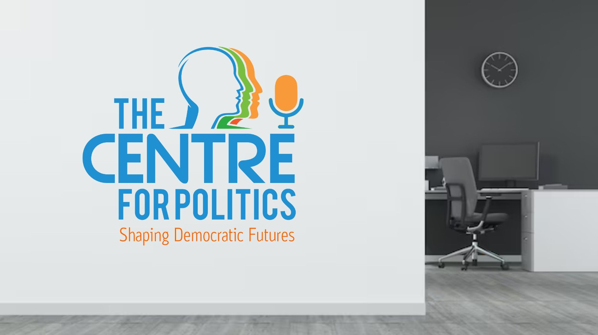

Election Strategy November 2026 • 6 min read
Micro-Targeting at the Booth Level: Why Modern Elections are Won in the Panna Pramukh Network
An analysis of how micro-constituency data, localized issues mapping, and disciplined booth committee management overturn conventional mass rallies.
Read Analysis →